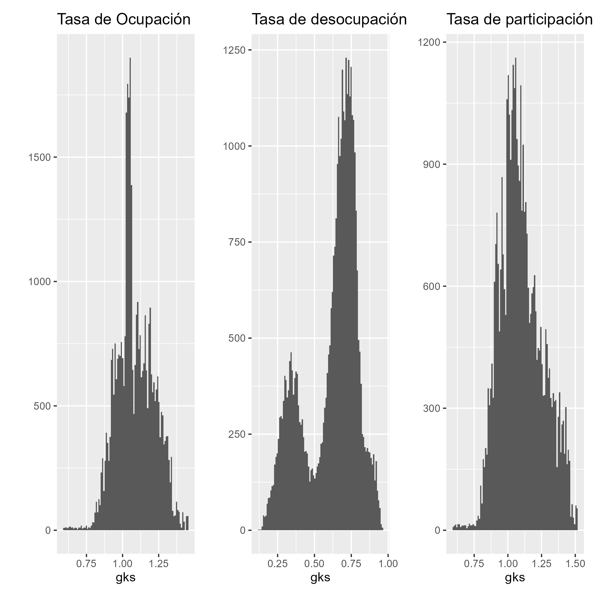
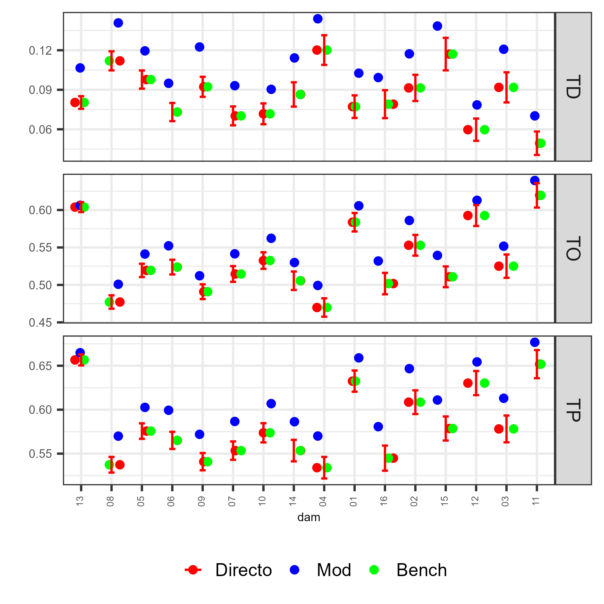
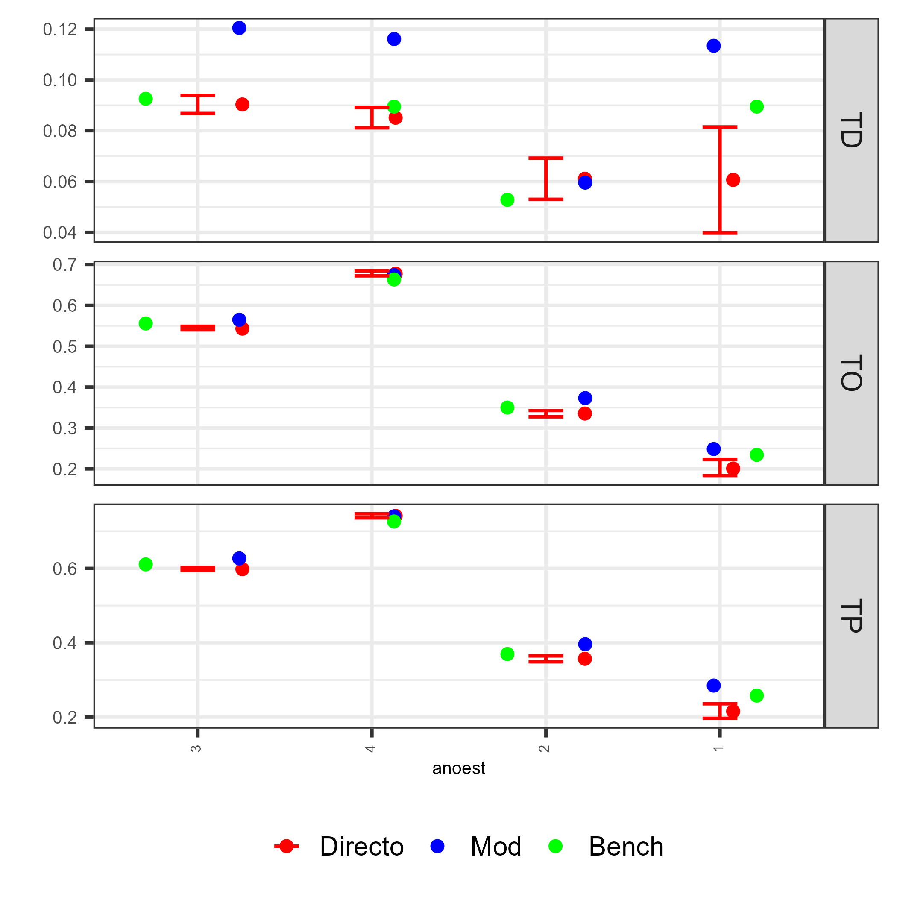
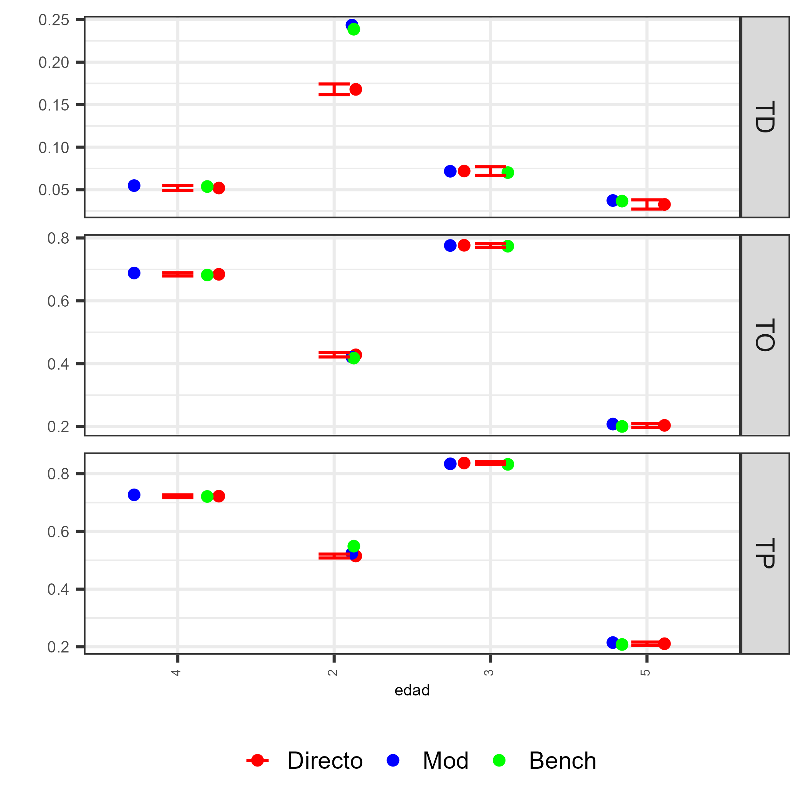

source("../Recurso/Modelo_unidad/funciones/benchmarking_empleo.R")
censo_pred <- readRDS("../Recurso/Modelo_unidad/censo_pred_dam2.rds") %>%
filter(edad>1, anoest %in% c("1","2","3","4"))
encuesta_sta_MT <- readRDS('../Recurso/Modelo_unidad/encuesta_sta_MT_dam2.rds')
encuesta_sta_MT <- encuesta_sta_MT %>%
filter(edad>1, anoest %in% c("1","2","3","4"))
encuesta_sta_MT %<>% dummy_cols(select_columns = "empleo")
list_bench <-
benchmarking_empleo(
encuesta_sta = encuesta_sta_MT,
poststrat_df = censo_pred,
names_cov = "dam",
metodo = "logit")
saveRDS(list_bench, file = "../Recurso/Modelo_unidad/list_bench_empleo_dam2.rds")Curso de Benchmarking para Modelos Bayesianos de Estimación en Áreas Pequeñas con Métodos MCMC
Benchmarking para el Modelo de unidad para Mercado del trabajo
Andrés Gutierrez - Stalyn Guerrero
División de Estadísticas - CEPAL
Introducción
El proceso de benchmarking de cadenas MCMC es crucial en SAE, porque:
Garantiza que las estimaciones desagregadas (ej. tasas de ocupación, participación o desempleo por área pequeña) sean coherentes con los niveles de agregación donde la encuesta es representativa, por ejemplo, divisiones administrativas mayores o nivel nacional.
Debe tenerse presente que el benchmarking es un procedimiento de ajuste estético: no mejora la calidad intrínseca del estimador, pero sí asegura consistencia y comparabilidad.
La calidad de las cadenas impacta directamente la precisión y coherencia de los estimadores por dominio.
Indicadores del Mercado Laboral
Punto de partida: caracterizar la dinámica del mercado dek trabajo
Se emplean tres indicadores fundamentales:
- Tasa de Ocupación (TO)
- Tasa de Participación (TP)
- Tasa de Desempleo (TD)
Generalización del Benchmarking Multinomial para una Iteración \(l\) del MCMC
En los modelos Bayesianos estimados mediante MCMC, el modelo produce, en cada iteración \(l = 1,\dots,L\):
\[ \theta_{l} = \left\{ \left(p_{O,k}^{(l)},; p_{D,k}^{(l)},; p_{I,k}^{(l)}\right) \right\}_{k=1}^{k} \]
donde:
- \(k\) indexa los post-estratos
- \(l\) indexa la iteración MCMC
- \(p_{\cdot,k}^{(l)}\) son las probabilidades predichas en esa iteración
El objetivo del benchmarking por iteración es obtener, para cada iteración, un conjunto ajustado:
\[ p_{O,k}^{(l,bench)},\quad p_{D,k}^{(l,bench)},\quad p_{I,k}^{(l,bench)} \]
tal que cumplan simultáneamente:
Coherencia multinomial por iteración
Para todo post-estrato \(k\):
\[ p_{O,k}^{(l,bench)} + p_{D,k}^{(l,bench)} + p_{I,k}^{(l,bench)} = 1. \]
Coherencia con las restricciones por dominio (DAM)
Para cada dominio \(d\), se deben cumplir:
Ocupación (TO):
\[ \sum_{k\in d} n_k p_{O,k}^{(l,bench)} = T_{O,d}^{DIR} \]
Desocupación (TD):
\[ \sum_{k\in d} n_k p_{D,k}^{(l,bench)} = T_{D,d}^{DIR} \]
Participación (TP) coherente
\[ p_{I,k}^{(l,bench)} = 1 - p_{O,k}^{(l,bench)} - p_{D,k}^{(l,bench)} \]
Estructura del algoritmo por iteración \(l\)
Para cada iteración del MCMC, se realiza:
Paso 1: Extraer predicciones
\[ \theta_{l} = \big(p_{O,k}^{(l)}, p_{D,k}^{(l)}, p_{I,k}^{(l)}\big) \]
Paso 2: Construcción de las matrices de calibración
Para TO:
\[ X^{(l)}_{O,den} = \mathbf{1}_d,\qquad X^{(l)}_{O,num} = \mathbf{1}_d \cdot p_{O,k}^{(l)} \]
Para TD:
\[ X^{(l)}_{D,den} = \mathbf{1}_d \cdot (p_{O,k}^{(l)} + p_{D,k}^{(l)}) \]
\[ X^{(l)}_{D,num} = \mathbf{1}_d \cdot p_{D,k}^{(l)} \]
Paso 3: Resolver calibración tipo Deville–Särndal
\[ g_k^{(l)} = \texttt{calib}\big(X^{(l)},, n_k,, T^{DIR}\big) \]
Paso 4: Ajustar probabilidades predichas
\[ p_{O,k}^{(l,bench)} = g_k^{(l)} p_{O,k}^{(l)} \]
\[ p_{D,k}^{(l,bench)} = g_k^{(l)} p_{D,k}^{(l)} \]
\[ p_{I,k}^{(l,bench)} = 1 - p_{O,k}^{(l,bench)} - p_{D,k}^{(l,bench)} \]
Paso 5: Calcular tasas
\[ TO_k^{(l,bench)} = p_{O,k}^{(l,bench)} \]
\[ TD_k^{(l,bench)} = \frac{p_{D,k}^{(l,bench)}}{p_{O,k}^{(l,bench)} + p_{D,k}^{(l,bench)}} \]
\[ TP_k^{(l,bench)} = \frac{p_{O,k}^{(l,bench)} + p_{D,k}^{(l,bench)}}{1} \]
4. Generalización del algoritmo para todas las iteraciones
Para \(l = 1,\ldots,L\):
\[ \big\{ p_{O,k}^{(l,bench)},p_{D,k}^{(l,bench)},p_{I,k}^{(l,bench)} \big\}_{k=1}^{K} \texttt{Benchmark}(\theta_l, T^{DIR}) \]
Los resultados se almacenan para luego obtener:
- Media posterior ajustada
- Intervalos creíbles ajustados
- CVs ajustados
Preocesando en R
Código de R
Validacion del Benchmarking

Plot de validación de estimaciones (I)
Código de R
source("../Recurso/Modelo_unidad/funciones/Funciones_empleo.R")
subgrupo <- c("dam","sexo", "area", "etnia", "edad", "anoest")
poststrat_df <- censo_pred %>% data.frame() %>%
mutate (gk_TO =list_bench$gk_bench$TO,
gk_TP = list_bench$gk_bench$TP,
gk_TD = list_bench$gk_bench$TD)
plot_subgrupo <- map(.x = setNames(subgrupo, subgrupo),
~ plot_compare_Ind(sample = encuesta_sta_MT,
poststrat = poststrat_df, by1 = .x
))
saveRDS(plot_subgrupo, "../Recurso/Modelo_unidad/00_plot_subgrupo.rds")Plot de validación de estimaciones (II)
Plot de validación por dam

Plot de validación por años de estudio

Plot de validación por edad

Benchmarking para todas las iteraciones
Código de R
multi_fit <-
readRDS("../Recurso/Modelo_unidad/Multinivel_multinomial_model_no_cor_dam2.rds")
censo_pred <-
readRDS("../Recurso/Modelo_unidad/censo_pred_dam2.rds")
model <- list(model_bayes = multi_fit, censo_pred = censo_pred)
list_bench$metodo_bench <- list(TD = "linear", TP = "linear", TO = "linear")
result_iter_calib <- benchmarking_empleo_all(
multi_fit = model,
list_bench = list_bench,
pars = "tasa_pred",
n_iter = 500
)
saveRDS(result_iter_calib, "../Recurso/Modelo_unidad/result_iter_calib.rds") Estimaciones
Estimación nacional usando las cadenas
Código de R
source("../Recurso/Modelo_unidad/funciones/Funciones_empleo.R")
result_iter_calib <- readRDS("../Recurso/Modelo_unidad/result_iter_calib.rds")
tab_nac <- map_df(
result_iter_calib,
~ Indicadores_censo(.x) %>%
mutate(value = value * 100) %>%
pivot_wider(names_from = Metodo ,
values_from = value)
)
saveRDS(tab_nac, "../Recurso/Modelo_unidad/01_tab_nac.rds")| variable | estimado_con | estimado_con_se |
|---|---|---|
| TO | 54.9203 | 0 |
| TD | 8.6000 | 0 |
| TP | 60.0879 | 0 |
Estimación dam usando las cadenas
Código de R
tab_dam <- map_df(
result_iter_calib,
~ Indicadores_censo(.x, var_by = "dam") %>%
mutate(value = value * 100) %>%
pivot_wider(names_from = Metodo ,
values_from = value)
) %>% group_by(variable, dam) %>%
summarise(
Bench. = mean(Bench),
Bench_se = sd(Bench))
saveRDS(tab_dam, "../Recurso/Modelo_unidad/002_tab_dam.rds")| variable | dam | Bench. | Bench_se |
|---|---|---|---|
| TO | 01 | 58.3689 | 0 |
| TO | 02 | 55.2926 | 0 |
| TO | 03 | 52.5037 | 0 |
| TO | 04 | 46.9853 | 0 |
| TO | 05 | 51.9394 | 0 |
Plot del Directo con IC vs. Modelo vs. Benchmarking

¡Gracias!